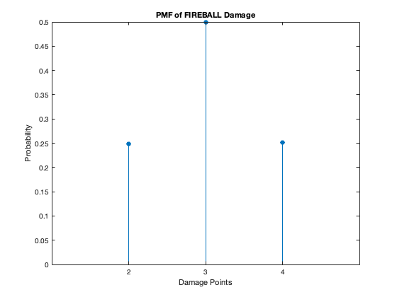
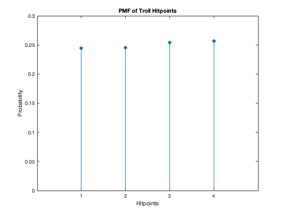
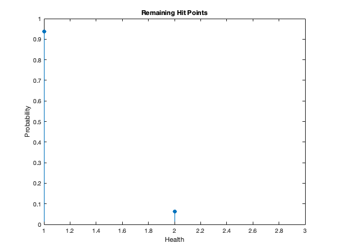
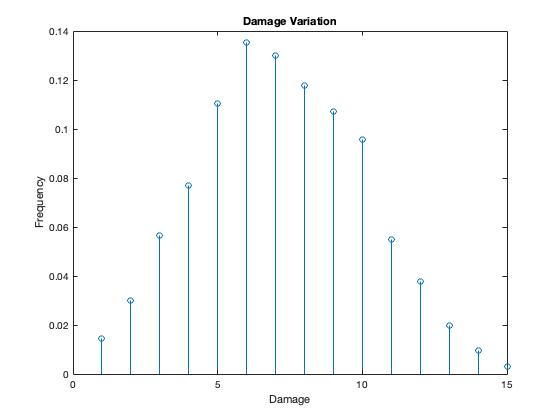

Hailey Hayoon Chung and Eric Taeyoo Kim
ECE-302-1 Probability Models and Stoch Pro, Professor Sam Keene, Spring 2024
Contents
Project 1: Dungeons and Dragons
clc; clear; close all;
Epic Question 1. Dice Rolls and Character Creation
As we are using Matlab to simulate the questions, we arbitrarily set num_trials to 100000. However, this value can be changed whenever we want.
num_trials = 100000;
Question 1)a)
count_1a is a variable to count the number of times any one roll of 3 dice results in 18.
count_1a = 0; % A for-loop to run num_trials many times to add the values on 3 dice and % increase count_1a if sum = 18. for i = 1:num_trials score = sum(randi(6,1,3)); if score == 18 count_1a = count_1a + 1; end end P_1a = (count_1a / num_trials)*100; disp(['Probability that any one roll of 3 dice generates an ability score of 18: ', num2str(P_1a), '%.']);
Probability that any one roll of 3 dice generates an ability score of 18: 0.466%.
Question 1)b)
count_1b is a variable to count the number of times an ability score of 18 is achieved from using the "fun method".
count_1b = 0; for i = 1:num_trials % randi(6,3,3) simulates three rolls of three dice, and this is summed % to form three ability scores. three_scores = sum(randi(6,3,3)); % the fun method selects the maximum score. score = max(three_scores); if score == 18 count_1b = count_1b + 1; end end P_1b = (count_1b / num_trials) * 100; disp(['Probability that the fun method generates an ability score of 18: ', num2str(P_1b), '%.']);
Probability that the fun method generates an ability score of 18: 1.384%.
Question 1)c)
count_1c is a variable to count the number of Fred Fontaines
count_1c = 0; for i = 1:num_trials % total_ability_scores is a variable to keep track of the total of 6 ability % scores total_ability_scores = 0; % loop over 6 criteria for j = 1:6 three_scores = sum(randi(6,3,3)); score = max(three_scores); total_ability_scores = total_ability_scores + score; end % since for a Fred Fontaine, total ability score would be 108 if total_ability_scores == 108 count_1c = count_1c + 1; end end P_1c = (count_1c / num_trials) * 100; disp(['Probability of generating Fred Fontaines: ', num2str(P_1c), '%.']);
Probability of generating Fred Fontaines: 0%.
Question 1)d)
count_1d is a variable to count the number of Sam Keenes
count_1d = 0; for i = 1:num_trials % is_nine is a variable to count the number of scores that equal 9. % Using a slightly different method from 1)c) since there are 25 ways % to roll a 9 with 3 dice. is_nine = 0; for j = 1:6 three_scores = sum(randi(6,3,3)); if max(three_scores) == 9 is_nine = is_nine + 1; end end if is_nine == 6 count_1d = count_1d + 1; end end P_1d = (count_1d / num_trials) * 100; disp(['Probability of generating Sam Keenes: ', num2str(P_1d), '%.']);
Probability of generating Sam Keenes: 0%.
Epic Question 2. Wizards, Trolls and Warriors
num_trials = 10000;
Question 2)a)
% Average number of hit points that each troll has: troll_hp = randi(4, 1, num_trials); average_troll_hp = mean(troll_hp); % Average fire ball damage fireball_damage = roll_dice(2, 2, num_trials); average_fireball_damage = mean(fireball_damage); % Calculate the probability that the fireball does greater than 3 points of damage prob_fireball_greater_3 = mean(fireball_damage > 3); disp(['Average number of hit points of a troll: ', num2str(average_troll_hp)]); disp(['Average damage of a fireball: ', num2str(average_fireball_damage)]); disp(['Probability that Fireball does > 3 points of damage: ', num2str(prob_fireball_greater_3)]);
Average number of hit points of a troll: 2.5225 Average damage of a fireball: 3.003 Probability that Fireball does > 3 points of damage: 0.2519
Question 2)b)
troll_hp_pmf = histcounts(troll_hp, 0.5:1:4.5, 'Normalization', 'probability'); fireball_damage_pmf = histcounts(fireball_damage, 1.5:1:4.5, 'Normalization', 'probability'); % PMF - Fireball Damage figure(1); stem(2:4, fireball_damage_pmf, 'filled'); title('PMF of FIREBALL Damage'); xlabel('Damage Points'); ylabel('Probability'); xticks(2:4); xlim([1 5]); % PMF - Troll Hit Points figure(2); stem(1:4, troll_hp_pmf, 'filled'); title('PMF of Troll Hitpoints'); xlabel('Hitpoints'); ylabel('Probability'); xticks(1:4); xlim([0 5]); 
Question 2)c)
% HP is 1d4, and there are 6 trolls troll_hp = randi(4, 6, num_trials); % fireball damage is 2d2 fireball_damage = roll_dice(2, 2, num_trials); % A bool matrix to compare troll hp vs fireball damage (troll would be dead % if fireball damage is greater than its hp) is_troll_dead = troll_hp <= fireball_damage; % Sum the boolean matrix to find the number of dead trolls num_dead_trolls = sum(is_troll_dead); % Count the number of simulations where Keene slays all trolls num_simulations_all_dead = sum(num_dead_trolls == 6); % Probability that all trolls are dead in a simulation prob_all_trolls_dead = num_simulations_all_dead / num_trials; % Display the result disp(['Probability that Keene slays all 6 trolls with FIREBALL: ', num2str(prob_all_trolls_dead)]);
Probability that Keene slays all 6 trolls with FIREBALL: 0.3436
Question 2)d)
% Generate health points for 6 trolls (1d4 roll each troll, 6 trolls) group_trolls = randi(4, 6, num_trials); % Reuse the fireball_damage variable from section a % Simulate fireball damage for each simulation fireball_damage = roll_dice(2, 2, num_trials); % Determine if each troll is dead (hit points less than or equal to fireball damage) dead_trolls = group_trolls <= fireball_damage; % Find all simulations where only one troll survived all_but_one = sum(dead_trolls) == 5; % Initialize an array to hold the health of the surviving troll remaining_health = zeros(1, num_trials); % Loop through each simulation for i = 1:num_trials if all_but_one(i) % Find the health of the surviving troll by getting the hit points that are greater than fireball damage % Since there is only one survivor, it's the max hit points remaining remaining_health(i) = max(group_trolls(:, i) - fireball_damage(i)); end end % Filter out the cases where no troll survived to avoid skewing the average remaining_health = remaining_health(remaining_health > 0); % Calculate the average remaining health of the surviving troll avg_health = mean(remaining_health); % Plot histogram of remaining Troll Healths health_values = unique(remaining_health); health_freq = histcounts(remaining_health, [health_values Inf], 'Normalization', 'probability'); figure; stem(health_values, health_freq, 'filled'); title("Remaining Hit Points"); xlabel("Health"); ylabel("Probability"); xlim([1 max(health_values)+1]); % Ensure the x-axis covers all health values % Display the average remaining health of the surviving troll disp(['Average remaining health of the surviving troll: ', num2str(avg_health)]);
Average remaining health of the surviving troll: 1.0621
Question 2)e)
% Determine if you can attack with sword based on a 20-sided die roll first_attack = randi(20, 1, num_trials); num_attacks = sum(first_attack >= 11); % Generate the attacks using the determined number from the 20-sided die sword = roll(6, 2, num_attacks); % Determine if you can attack with hammer using 20-sided dice second_attack = randi(20, 1, num_attacks); num_second = sum(second_attack >= 11); hammer = randi(4, 1, num_second); % Possible additional damage from hammer t = second_attack >= 11; sword(t) = sword(t) + hammer; % Histogram for total damage damage = histcounts(sword,[unique(sword) Inf],'Normalization','probability'); figure stem(damage) title("Damage Variation") xlabel("Damage") ylabel("Frequency") avg_damage = mean(damage); disp("Expected amount of damage done to Keene: " + avg_damage)
Functions
functions that were used in this assignment:
function v = roll(num_sides, num_dice, num_trials) v = sum(randi(num_sides, num_dice, num_trials)); end function rolls = roll_dice(num_dice, sides, num_rolls) rolls = sum(randi(sides, num_dice, num_rolls)); end
Expected amount of damage done to Keene: 0.066667